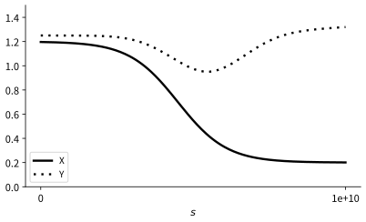
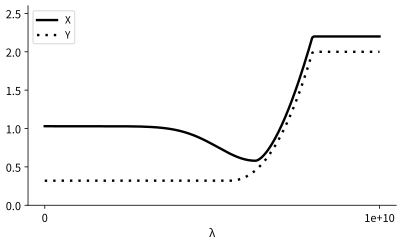

[MAS-I-S18:34] You are estimating the coefficients of a linear regression model by minimizing the sum:
\[\sum_{i=1}^n\Big(y_i-\beta_0-\sum_{j=1}^k\beta_jx_{ij}\Big)^2\quad\text{subject to}\quad\sum_{j=1}^k\beta_j^2\le s\]
From this model, you have produced the following plot of various statistics as a function of the budget parameter, \(s\):

依題目原圖重畫的示意圖，橫軸是預算參數 \(s\)（0 到 \(10^{10}\)）。實線 X 從約 1.2 一路平滑下降到約 0.2 後持平；虛線 Y 從約 1.25 先下降到約 0.95 的最低點，再回升到約 1.3。
Determine which of the following statistics \(X\) and \(Y\) represent.
Before applying the lasso, each predictor is standardized by dividing it by its standard deviation computed with divisor \(n\). The values of one predictor are
\[2,\quad 4,\quad 6,\quad 8 .\]
Calculate the standardized value of the observation 8.
A ridge regression is performed based on two predictors and an intercept:
\[y_i=\beta_0+\beta_1x_{i1}+\beta_2x_{i2}+\varepsilon_i\]
For \(\beta_1\) and \(\beta_2\), only integer values between 1 and 4 are considered.
The resulting lowest residual sum of squares for the optimal value of \(\hat\beta_0\) and each combination of \(\hat\beta_1\) and \(\hat\beta_2\) is:
\(\hat\beta_2\) \ \(\hat\beta_1\)
1
2
3
4
1
56
52
46
52
2
48
41
34
30
3
42
37
31
33
4
36
40
44
48
The fitted values of the parameters are \(\hat\beta_1=3\), \(\hat\beta_2=2\). Determine the lowest value of the tuning parameter \(\lambda\) that results in these fitted values.
[MAS-I-F19:37] For a set of data with 40 observations, 2 predictors (\(X_1\) and \(X_2\)), and one response (\(Y\)), the residual sum of squares has been calculated for several different estimates of a linear model with an intercept. Only integer values from 1 to 3 were considered for estimates of \(\beta_0\) (the intercept), \(\beta_1\), and \(\beta_2\).
The grid below shows the residual sum of squares for every combination of the parameter estimates, after standardization:
\(\hat\beta_0=1\)
\(\hat\beta_2=1\)
\(\hat\beta_2=2\)
\(\hat\beta_2=3\)
\(\hat\beta_1=1\)
3,924
1,977
1,250
\(\hat\beta_1=2\)
1,858
1,141
711
\(\hat\beta_1=3\)
1,386
822
369
\(\hat\beta_0=2\)
\(\hat\beta_2=1\)
\(\hat\beta_2=2\)
\(\hat\beta_2=3\)
\(\hat\beta_1=1\)
3,949
1,822
1,174
\(\hat\beta_1=2\)
1,907
1,187
717
\(\hat\beta_1=3\)
1,363
711
349
\(\hat\beta_0=3\)
\(\hat\beta_2=1\)
\(\hat\beta_2=2\)
\(\hat\beta_2=3\)
\(\hat\beta_1=1\)
3,784
1,671
1,107
\(\hat\beta_1=2\)
1,827
1,128
668
\(\hat\beta_1=3\)
1,294
700
344
Let \(\hat\beta_i^R\) be the estimate of \(\beta_i\) using a ridge regression with budget parameter \(s=5\). Assume the intercept is not subject to the budget parameter.
Calculate the value of \(\hat\beta_0^R+\hat\beta_1^R+\hat\beta_2^R\).
A simple linear regression is fitted to 4 observations using ridge regression with \(\lambda=5\). You are given
\[\sum x_i=10,\quad \sum x_i^2=45,\quad \sum y_i=20,\quad \sum x_iy_i=100 .\]
Calculate the ridge estimate of the slope.
A regression with no intercept has design matrix equal to the \(3\times3\) identity matrix and response vector \((6,\ -3,\ 1.5)\). Ridge regression with \(\lambda=0.5\) is used.
A ridge regression with two predictors and an intercept considers only integer slopes from 1 to 3. For the optimal intercept, the residual sums of squares are (rows: \(\hat\beta_2\); columns: \(\hat\beta_1\)):
\(\hat\beta_2\) \ \(\hat\beta_1\)
1
2
3
1
40
35
30
2
33
28
22
3
30
24
20
The budget parameter is \(s=8\). Calculate \(\hat\beta_1+\hat\beta_2\).
[MAS-I-F18:37] You are estimating the coefficients of a linear regression model by minimizing the sum:
\[\sum_{i=1}^n\Big(y_i-\beta_0-\sum_{j=1}^p\beta_jx_{ij}\Big)^2+\lambda\sum_{j=1}^p\lvert\beta_j\rvert\]
From this model you have produced the following plot of various statistics as a function of the tuning parameter \(\lambda\):

依題目原圖重畫的示意圖，橫軸是 \(\lambda\)（0 到 \(10^{10}\)）。實線 X 從約 1.0 緩慢下降到約 0.6 的最低點，接著急升到約 2.2 後持平；虛線 Y 從約 0.3 幾乎持平，後段急升到約 2.0 後持平，始終在 X 下方。
Determine which of the following statistics \(X\) and \(Y\) represent.
[MAS-I-S18:36] For a set of data with 40 observations, 2 predictors (\(X_1\) and \(X_2\)), and one response (\(Y\)), the residual sum of squares has been calculated for several different estimates of a linear model with no intercept. Only integer values from 1 to 5 were considered for estimates of \(\beta_1\) and \(\beta_2\).
The grid below shows the residual sum of squares for every combination of the parameter estimates, after standardization:
\(\hat\beta_1\) \ \(\hat\beta_2\)
1
2
3
4
5
1
2,855.0
870.3
464.4
357.2
548.6
2
1,059.1
488.4
216.3
242.8
567.9
3
657.0
220.0
81.6
241.9
700.8
4
368.4
65.1
60.5
354.5
947.1
5
193.2
23.7
152.8
580.6
1,307.0
Let:
\(\hat\beta_1^L\) = Estimate of \(\beta_1\) using a lasso with budget parameter \(s=5\)
\(\hat\beta_2^L\) = Estimate of \(\beta_2\) using a lasso with budget parameter \(s=5\)
Calculate the ratio \(\hat\beta_1^L/\hat\beta_2^L\).
For the simple linear regression in the previous question (\(S_{xx}=20\), \(S_{xy}=50\)), determine the smallest value of \(\lambda\) for which the lasso slope estimate equals 0.
(A) 25
(B) 50
(C) 100
(D) 200
(E) The slope is never exactly 0 for finite \(\lambda\).
A regression with no intercept has design matrix equal to the \(4\times4\) identity matrix and response vector \((4,\ -1,\ 2.5,\ -6)\). The lasso is used with \(\lambda=3\).
A lasso regression with two predictors and an intercept considers only integer slopes from 0 to 2. For the optimal intercept, the residual sums of squares are (rows: \(\hat\beta_2\); columns: \(\hat\beta_1\)):
\(\hat\beta_2\) \ \(\hat\beta_1\)
0
1
2
0
50
42
38
1
44
36
33
2
41
34
30
The tuning parameter is \(\lambda=5\). Determine \((\hat\beta_1,\hat\beta_2)\).
You are given the following statements regarding principal components regression.
I. The principal components are weighted averages of the explanatory variables.
II. A principal component \(Z_i=\sum\phi_{ij}X_{ij}\) where \(\sum_j\phi_{ij}^2=1\) and the coefficients \(\phi_{ij}\) are selected to minimize the variance of \(Z_i\).
III. The second principal component is selected to be uncorrelated with the first principal component.
Which statements are true?
(A) None
(B) I only
(C) II only
(D) III only
(E) I, II, and III
中文題意
關於主成分迴歸的三個敘述：
I. 主成分是解釋變數的加權平均。
II. 主成分 \(Z_i=\sum_j\phi_{ij}X_{ij}\)，其中 \(\sum_j\phi_{ij}^2=1\)，係數 \(\phi_{ij}\) 的選法使 \(Z_i\) 的變異數最小。
III. 第二主成分的選法使它和第一主成分不相關。
哪些正確？
(A) 都不正確 (B) 只有 I (C) 只有 II (D) 只有 III (E) I、II、III
答案
(D) 只有 III
解析
I 錯：主成分是線性組合，限制是負荷量的平方和為 1，不是係數和為 1，係數也可以是負的，所以不一定是加權平均。
You fit a linear regression model \(y_i=\beta_0+\beta_1x_{i1}+\beta_2x_{i2}+\varepsilon_i\) using partial least squares with \(Z_1=\phi_1X_1+\phi_2X_2\).
Determine \(\phi_1\) and \(\phi_2\) without standardizing the explanatory variables.
[MAS-I-S19:37] You want to perform a regression of \(Y\) onto predictors \(X_1,X_2,\ldots,X_p\), using a large number of observations, and are considering the following modelling techniques:
Lasso Regression
Partial Least Squares
Principal Component Analysis
Ridge Regression
Determine how many of the above modelling procedures perform variable selection.
Determine which of the following statements is true.
(A) Principal components regression performs feature selection.
(B) Principal components regression using all \(k\) principal components gives the same fitted values as least squares on the original \(k\) predictors.
(C) Principal components are constructed to be uncorrelated with the response.
(D) The loadings of each principal component must sum to 1.
(E) Partial least squares always has lower test MSE than principal components regression.
In principal components regression, the number of components used, \(M\), is increased from 1 to \(k\). Determine which of the following statements is/are true.
I. The squared bias generally decreases.
II. The variance generally decreases.
III. The training residual sum of squares does not increase.
(A) III only
(B) I and II only
(C) I and III only
(D) II and III only
(E) The correct answer is not given by (A), (B), (C), or (D).
A least squares model with an intercept is fitted to 20 observations whose predictors are in general position. Determine the smallest number of predictors that guarantees the residuals are all zero.
[MAS-I-S19:28] Determine which one of the following statements about ridge regression is false.
(A) As the tuning parameter \(\lambda\to\infty\), the coefficients tend to zero.
(B) The ridge regression coefficients can be calculated by determining the coefficients \(\hat\beta_0^R,\hat\beta_1^R,\ldots,\hat\beta_p^R\) that minimize \(\sum_{i=1}^n\big(y_i-\beta_0-\sum_{j=1}^p\beta_jx_{ij}\big)^2+\lambda\sum_{j=1}^p\beta_j^2\).
(C) Unlike standard least square coefficients, ridge regression coefficients are not scale equivariant.
(D) The shrinkage penalty is applied to all coefficient estimates except for the intercept.
(E) Ridge regression shrinks the coefficient estimates, which has the benefit of reducing the bias.
[MAS-I-F19:36] You are given the following three statements regarding shrinkage methods in linear regression:
I. As tuning parameter \(\lambda\) increases towards \(\infty\), the penalty term has no effect and a ridge regression will result in the unconstrained estimates.
II. For a given dataset, the number of variables in a lasso regression model will always be greater than or equal to the number of variables in a ridge regression model.
III. The issue of selecting a tuning parameter for a ridge regression can be addressed with cross-validation.
Determine which of the above statements are true.
(A) I only
(B) II only
(C) III only
(D) I, II, and III
(E) The correct answer is not given by (A), (B), (C), or (D).
中文題意
（MAS-I 2019 秋季第 36 題）關於線性迴歸的收縮方法，下列三個敘述：
I. 調整參數 \(\lambda\) 增加到無限大時，懲罰項沒有作用，ridge 迴歸得到不受限制的估計。
II. 對同一組資料，lasso 模型中的變數個數一定大於或等於 ridge 模型中的變數個數。
III. ridge 迴歸選擇調整參數的問題，可以用交叉驗證解決。
哪些正確？
(A) 只有 I (B) 只有 II (C) 只有 III (D) I、II、III (E) 以上皆非
答案
(C) 只有 III
解析
I 錯：\(\lambda\to\infty\) 時懲罰最重，斜率趨近 0；\(\lambda=0\) 才是不受限制的最小平方。
II 錯：方向反了。ridge 保留全部變數，lasso 會把一些設成 0，所以 lasso 的變數個數小於或等於 ridge。
A ridge regression is performed based on two predictors and an intercept:
\[y_i=\beta_0+\beta_1x_{i1}+\beta_2x_{i2}\]
For \(\beta_1\) and \(\beta_2\), only integer values between 1 and 4 are considered.
The resulting lowest residual sum of squares for the optimal value of \(\hat\beta_0\) and each combination of \(\hat\beta_1\) and \(\hat\beta_2\) is:
\(\hat\beta_2\) \ \(\hat\beta_1\)
1
2
3
4
1
56
52
46
52
2
48
41
34
16
3
42
37
31
33
4
36
40
44
48
The budget parameter for the ridge regression is \(s=12\). Determine the estimates of \(\beta_1\) and \(\beta_2\).
A linear regression is performed based on two predictors and an intercept:
\[y_i=\beta_0+\beta_1x_{i1}+\beta_2x_{i2}+\varepsilon_i\]
For \(\beta_1\) and \(\beta_2\), only integer values between 0 and 3 are considered.
The resulting lowest residual sum of squares for the optimal value of \(\hat\beta_0\) and each combination of \(\hat\beta_1\) and \(\hat\beta_2\) is:
\(\hat\beta_2\) \ \(\hat\beta_1\)
0
1
2
3
0
82
77
70
62
1
74
70
65
61
2
69
63
62
60
3
67
60
59
58
The lasso with budget parameter \(s=3\) is performed. Determine the fitted values of \(\beta_1\) and \(\beta_2\).
A linear regression is performed based on two predictors and an intercept:
\[y_i=\beta_0+\beta_1x_{i1}+\beta_2x_{i2}+\varepsilon_i\]
For \(\beta_1\) and \(\beta_2\), only integer values between 0 and 3 are considered.
The resulting lowest residual sum of squares for the optimal value of \(\hat\beta_0\) and each combination of \(\hat\beta_1\) and \(\hat\beta_2\) is:
\(\hat\beta_2\) \ \(\hat\beta_1\)
0
1
2
3
0
82
77
70
67
1
74
70
65
62
2
69
64
62
57
3
67
63
59
56
The lasso with tuning parameter \(\lambda=4\) is performed. Determine the fitted values of \(\beta_1\) and \(\beta_2\).
[SRM Sample Question #8] Determine which of the following statements describe the advantages of using an alternative fitting procedure, such as subset selection and shrinkage, instead of least squares.
I. Doing so will result in a simpler model
II. Doing so will improve prediction accuracy
III. The results are easier to interpret
(A) I only
(B) II only
(C) III only
(D) I, II, and III
(E) The correct answer is not given by (A), (B), (C), or (D).